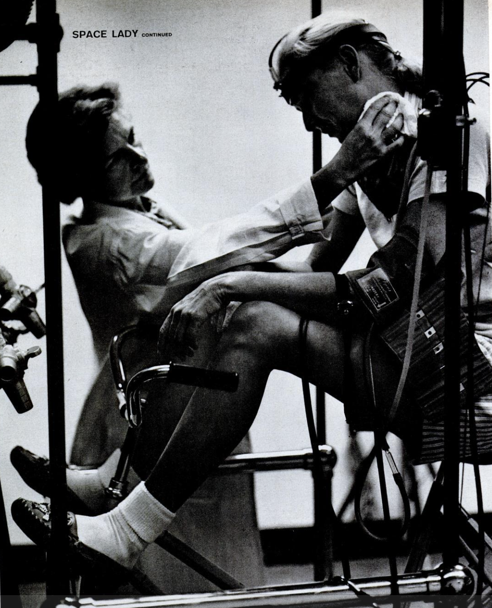

The Before
1959-1978 · Life Magazine & Mercury 13
PHOTOGRAPHIC ESSAY
"A Lady Proves She's Fit for Space Flight"
Exclusive Pictures Depict Jerrie Cobb's Courage and Aptitude in a Hitherto Secret Program for Women

Perspiring Jerrie is mopped by labratory researcher after demanding test - 10 minutes of hard nonstop pedaling on bicycle ergometer. Life Magazine, August 29, 1960, p. 74.
"After a series of exhaustive and exhausting medical tests, 75 in all, during which she complained less than the Mercury men had, Jerrie Cobb easily passed the rigid requirements laid down for astronauts-in-training."— Life Magazine, August 29, 1960, p. 72
In Their Own Words: Wally Funk
NASA's own oral history program recorded Wally Funk's account of the Lovelace tests in 1999. Her testimony is the most detailed first-person record of what the women actually endured.
"I had not a shadow of a doubt. I was their subject. They could do anything with me that they wanted to do."— Wally Funk, NASA Oral History, July 18, 1999
Funk set the record in the isolation tank at 10 hours and 35 minutes. The Mercury 7 men were tested in a lit room. Funk floated in total darkness with all five senses removed.
"159 men were selected to test for Mercury and 7 were chosen. 25 women were selected and 13 passed. Do we have a little bit of information here on how well women do things? A dog did it. A monkey did it. Man did it. Woman can do it."— Wally Funk, NASA Oral History, July 18, 1999
"Civilian women were only permitted 3 Gs and were not allowed G suits."— Wally Funk, NASA Oral History, July 18, 1999
Funk improvised, requesting "her worst Merry Widow and girdle" from her mother, modified it into a makeshift G suit, and wore it under her flight suit without telling testers — a detail that didn't emerge publicly for 25 years.
Full transcript available: NASA Oral History — Wally Funk, July 18, 1999 (PDF)
Before 1983 and Sally Ride's milestone, space travel was strictly under the domain of men, dominated by military pilots. Women proved aptitude in both physiological and mental aspects, with some outshining and exceeding male test scores. Jerrie Cobb, one of the exclusive thirteen pilots in the Mercury 13 experiment, had passed 75 exhaustive tests, in which she had “complained less than the Mercury men had,” and “her capacity to withstand the strains of space compared favorably with the men’s” (73-74, Life Magazine 1960). The media believed the women were ready; however, rigid institutional policies prevented women from being eligible for the space program. For qualification, NASA required all astronauts to possess military flying experience, which wasn’t available for women at the time due to firm sexist policies. Members of the Mercury 13 set out to break down these barriers.